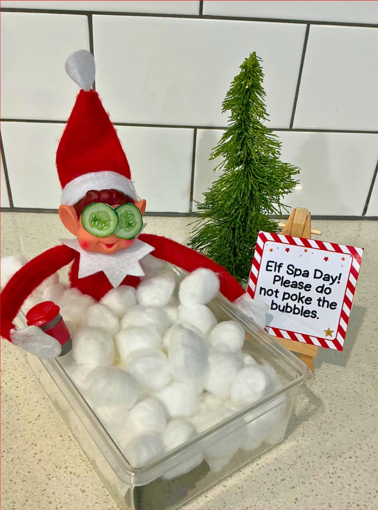
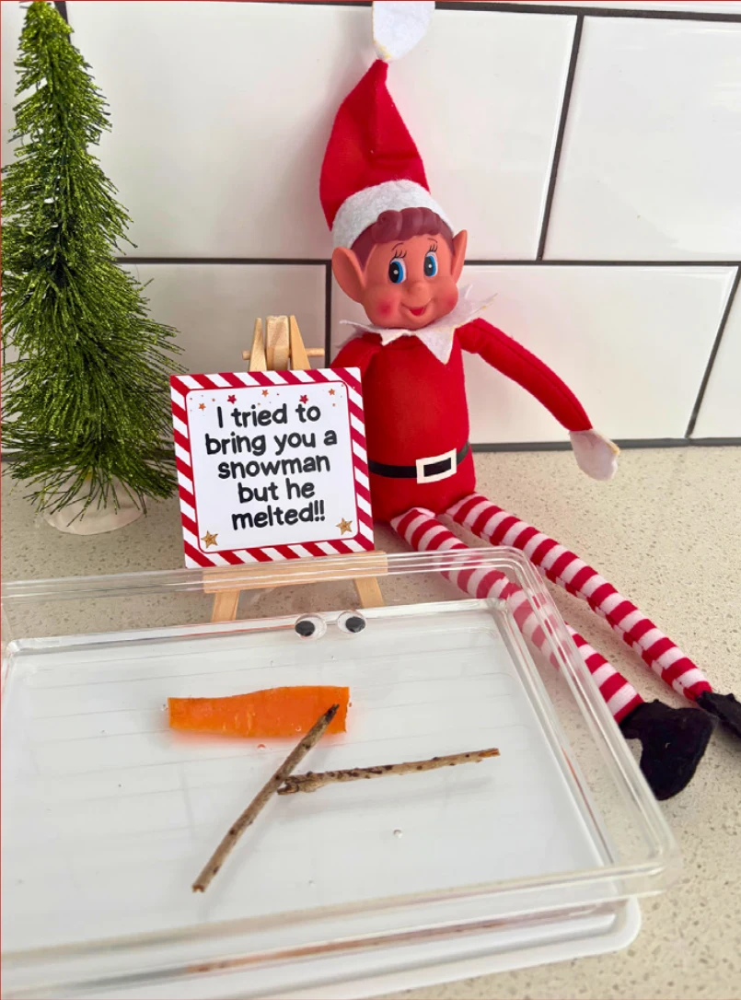
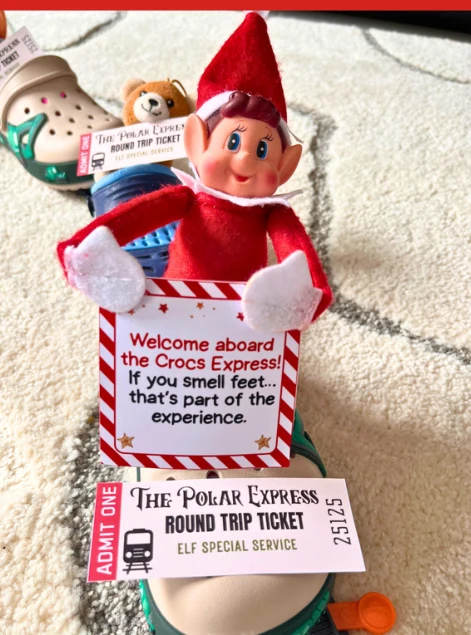
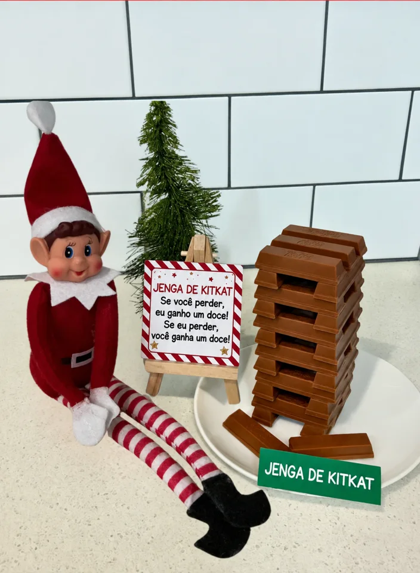
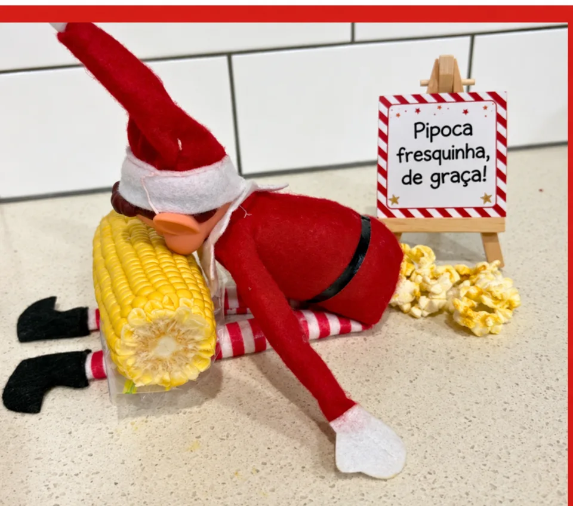
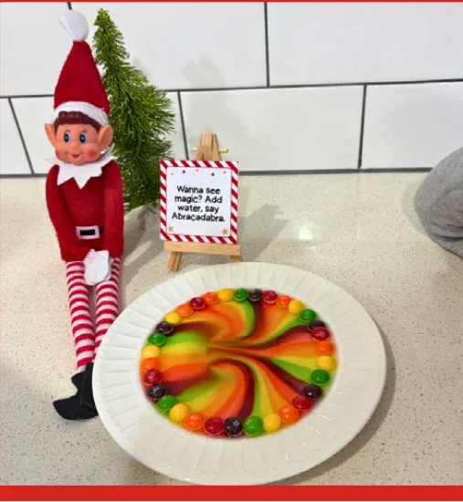
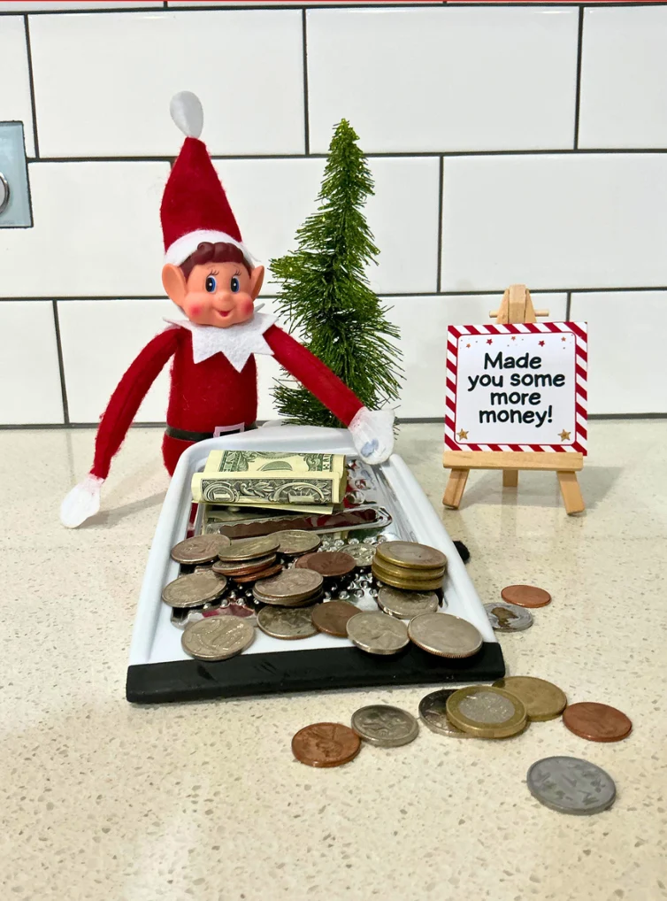
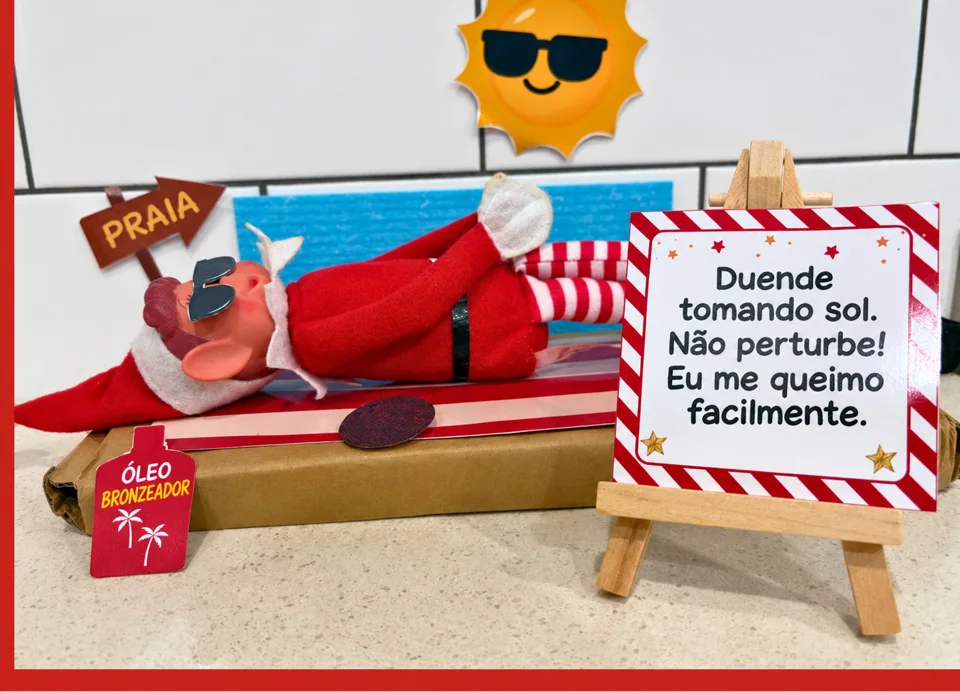
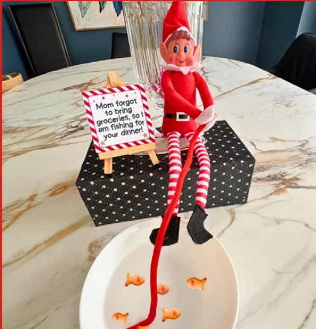
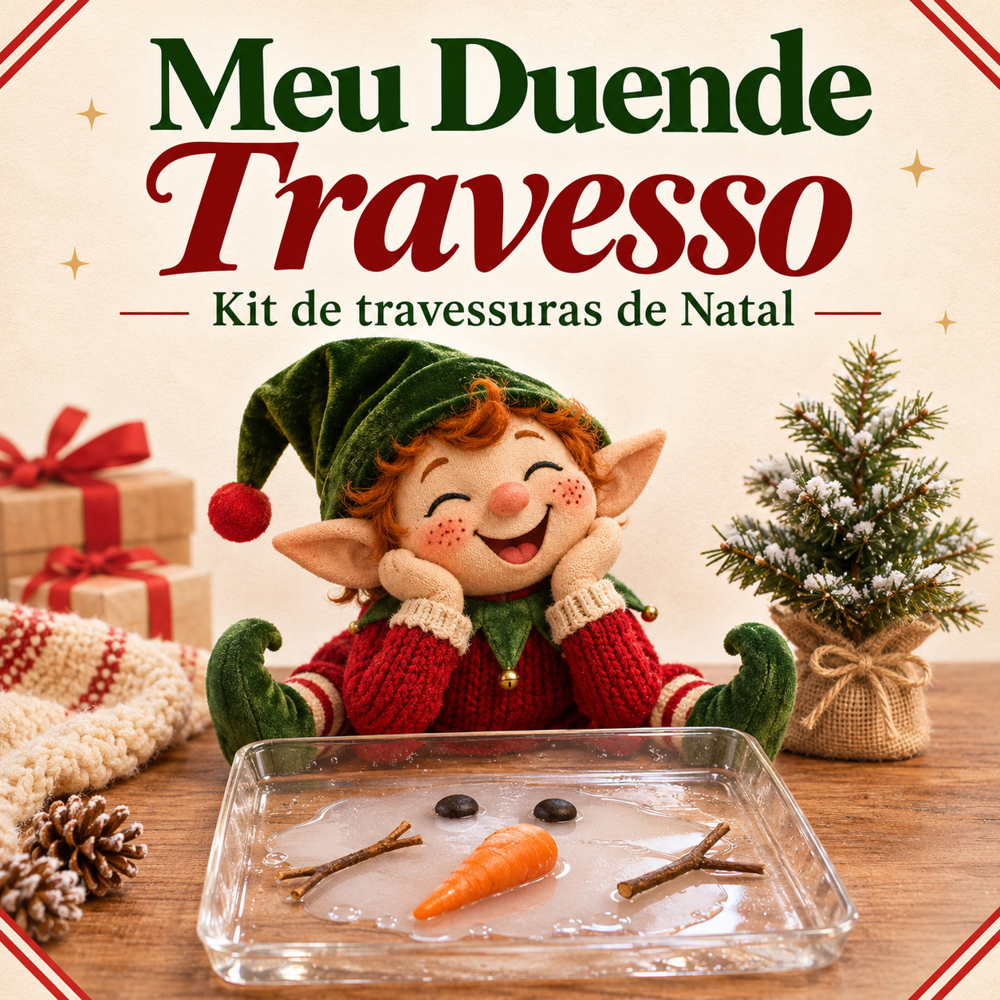

O boneco derreteu
Um nariz de cenoura, dois gravetos e um duende com cara de inocente.
Meu Duende Travesso
Traga pra casa a tradição do duende travesso, conhecida nos Estados Unidos. À noite, você prepara a surpresa. De manhã, as crianças descobrem o que ele aprontou.
Com o Meu Duende Travesso, você tem ideias prontas pra criar esse momento em casa. É um kit digital com fotos das brincadeiras, passo a passo e bilhetes pra imprimir.
Quero começar a brincadeira R$ 19,90 · Pagamento único · Acesso pelo WhatsApp e por e-mail
As crianças seguem as pistas pela casa. Quando encontram o duende, começa a melhor parte da brincadeira: ouvir a explicação delas sobre como ele conseguiu aprontar aquilo.
Quero fazer isso aqui em casa
Entre organizar a ceia, comprar os presentes e dar conta da rotina, sobra pouco tempo pra inventar uma brincadeira do zero. Por isso, cada travessura do guia já vem com foto, lista de materiais e instruções. Você escolhe uma que dá pra montar com o que tem em casa, imprime o bilhete e deixa a surpresa pronta.
E, na manhã seguinte, quando seu filho perguntar como o duende foi parar ali, você pode devolver a pergunta:
“Ué, o que você acha que aconteceu?”
A história que ele inventar pode ser a parte mais engraçada de todas.
Um nariz de cenoura, dois gravetos e um duende com cara de inocente.
Um banho de espuma de algodão e duas rodelas de pepino nos olhos.

Uma fila de calçados que virou trem, com passageiros e passagem.

Um desafio de equilíbrio que dá vontade de comer antes de jogar.

Uma espiga de um lado, pipoca do outro e um duende no meio da confusão.

Um arco-íris que aparece no prato quando a água toca os confeitos.

Uma nota e um monte de moedas espalhadas. Como será que ele fez isso?

Um duende de óculos escuros tomando sol dentro de casa.

Uma tigela que virou lago e um pescador esperando o jantar morder a isca.

Veja a foto de cada montagem, confira os materiais e siga o passo a passo. Dá pra consultar o guia no celular enquanto prepara a cena.
Bilhetes, plaquinhas, passagens do trenzinho, malinha e outros acessórios em português. Você imprime só o que for usar.
Dê boas-vindas ao duende com a carta de chegada e encerre a visita com a despedida. O guia também traz uma carta para o Papai Noel e certificados para imprimir.
Abra o guia e veja qual brincadeira dá pra fazer com o que você já tem.
Posicione o duende, prepare a cena e deixe o recado no lugar.
Deixe as crianças encontrarem a surpresa. Quando elas vierem te chamar, vá junto e faça aquela cara de quem também não fazia ideia. 🤭
Pagamento único
Quero meu Duende Travesso por R$ 19,90O kit é digital. O boneco e os materiais das montagens são providenciados à parte.Você preenche seus dados, faz o pagamento e recebe o acesso pelo WhatsApp e por e-mail.
Você pode abrir o guia no celular e imprimir só os bilhetes, plaquinhas e recortes da brincadeira escolhida.
Faça no seu ritmo. Pode ser uma manhã especial, alguns dias ou sempre que der vontade de surpreender as crianças.
A compra inclui os dois PDFs. Use um duende que você já tem ou providencie um separadamente.
Imagina ouvir essa pergunta no próximo Natal porque, numa manhã qualquer, vocês se divertiram juntos tentando descobrir o que um duende tinha aprontado.
A primeira surpresa pode ser amanhã.
Quero começar essa brincadeira em casaReceba o kit completo direto no WhatsApp.